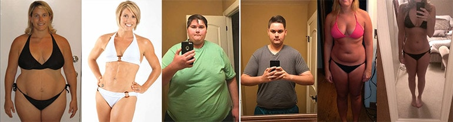

Die Journalistin Anna
(Mama's Gesundheit).
In den letzten drei Monaten sind unsere Leser einfach verrückt nach der neuen Sensation des Internets - ein natürliches Heilmittel aus Kakao und vielen natürlichen Zutaten. Es hat Tausenden von Frauen auf der ganzen Welt geholfen, das Gewicht radikal zu reduzieren und die Falten zu beseitigen. Dieses revolutionäre Gewichtsverlustsystem, das "Heiliger Gral der Gewichtsabnahme" genannt wird, ist zum Helden mehrerer Fernsehprogramme geworden. Wie sich herausstellte, ist das 100% natürlich und gleichzeitig absolut erschwinglich.
Sogar viele Stars, wie Vicky Pattison, Jessica Simpson, Ricky Gervais und Jonah Hill haben mit diesem Getränk Gewicht verloren. Ihre fantastische Wirkung wurde klinisch bewiesen. Sie verbrennen nicht nur das gesamte gespeicherte Fett, sondern reinigen auch den Körper von Giftstoffen, verjüngen ihn und beschleunigen den Stoffwechsel erheblich. All dies, damit der Körper in Zukunft keine Fettspeicher mehr ablagert.
Wie es sich im Laufe unserer Forschung der verschiedenen Methoden der Gewichtsabnahme herausstellte, ist der Prozess des Abnehmens eine sehr schwierige Aufgabe.
Nach eingehender Forschung und Interviews mit Menschen, die Idealia einnehmen, haben wir festgestellt, dass dies ein Durchbruch in der Diätetik ist. "Lesen Sie weiter und finden Sie heraus, warum wir dieser Methode ein spezielles Thema gewidmet haben."
"Ich habe schon 13 kg abgenommen!", sagt Christine
Bestellen
Der Grund, warum die meisten Diäten nicht helfen ist, dass sie unrealistische Beschränkungen auferlegen. Einige sagen, dass wir viel Protein essen müssen, andere betonen die Wichtigkeit von Kohlenhydraten. "In beiden Fällen müssen Sie Ihre Essgewohnheiten ziemlich ändern."
In diesem speziellen Programm werden wir das Gewichtverlust-System im Detail betrachten, das kein Diäten kein Sport braucht und noch wichtiger, den Körper nicht schädigt. Wir betrachten dies als eine echte Revolution im Ansatz zur Gewichtsreduktion.
Vielleicht haben Sie schon von gehört? enthält Natürlichen Kakao, Grüne Kaffeebohnen, Natürliche Acai Beeren, Bio Goji Beeren, Organische Chiasamen sowie einen Auszug aus Ganoderma Lucidum.
All diese Inhaltsstoffe sind darauf ausgerichtet, überschüssiges Fett zu verbrennen und den Stoffwechsel zu beschleunigen.
Studien des prestigeträchtigen UCLA-Forschungszentrums in Los Angeles (USA) mit -Tröpfchen zeigten, dass dieses Mittel bei regelmäßiger Anwendung den Stoffwechsel und die Fähigkeit des Körpers, Fett zu verbrennen, um 318% beschleunigen kann.
Das Problem ist jedoch, dass nach dem Erfolg von viele Fälschungen auf den Markt kamen, die im Vergleich zum Original völlig wirkungslos sind.
Aber originelle hat in seiner Wirksamkeit in vielerlei Hinsicht unsere Erwartungen übertroffen. Leute, die kurmäßig angewendet haben, haben das Gewicht deutlich reduziert, wurden energetischer und aktiver. Aber wenn Sie skeptisch sind, dann Sie sind nicht allein. Als wir zum ersten Mal von diesen Tropfen hörten, glaubten wir nicht sofort an ihre Wirksamkeit.
Nachdem wir jedoch entschieden haben, dass dieser Trend unsere Aufmerksamkeit verdient, haben wir begonnen, die Geschichten von Menschen zu lesen, die mit abgenommen haben. Besonders haben wir uns dafür interessiert, dass diese Leute ihre Lebensweise nicht geändert haben.
Das Ergebnis einer Diät mit : Unsere Leser verloren in nur einem Monat mindestens 7 kg!
Einer unserer Leser, Margarita Wehlmann, sagte, dass sie mehr als 20 kg in nur 5 Wochen mit verloren hat. In ihrem Blog hat sie geschrieben:
"Ich konnte nicht glauben, wie einfach es war, ich änderte meine Gewohnheiten überhaupt nicht, aber das Fett schmolz wie Butter. Schließlich habe ich ein Mittel gefunden, das funktioniert!"
Ein anderer Bericht von Susanne
Ich wurde einmal ausgewählt, um zu testen, weil ich vor meiner eigenen Hochzeit, die in 3 Monaten geplant war, beschlossen hatte, ca. 10 zusätzliche Kilogramm abzuwerfen. "Die Freunde haben eine Kur für mich bestellt und ich habe die in ein paar Tagen bekommen.
Ich bestellte , weil es gute klinische Studienergebnisse hatte und von Forschungslaboratorien mit strengen Produktkontrollanforderungen genehmigt wurde. "Wie mir gesagt wurde, ist dies eines der konzentriertesten und reinsten Schlankheitsmittel auf dem Markt."
"Klinisch bewiesen, dass :"
- "Normalisiert den hormonellen Hintergrund des Körpers;"
- "Reguliert Stoffwechselprozesse, stärkt Haut, Haare und Nägel;"
- "Reguliert den Stoffwechsel, fördert eine bessere Aufnahme von Nährstoffen;"
- "Reduziert Cholesterin, reguliert die Arbeit des Magen-Darm-Trakts;"
- "Entfernt Giftstoffe und Giftstoffe, verbrennt Fett und aktiviert den Prozess der Zellreparatur."
"Ich habe 2 mal am Tag ungefähr ein Monat lang eingenommen."
Meine Ergebnisse: In einem Monat verlor ich 12 kg und wurde um fast 3 Größen kleiner. Jetzt bin ich glücklich!
Erste Woche:
Nach einer Woche mit dem Drink war ich überrascht, wie schnell es wirkt. "Ich wurde auch energischer, und ich wollte fast nicht essen - reduziert den Appetit und das Verlangen nach Süßigkeiten."
Ich fühlte mich sehr gut!
Aber die Hauptsache ist, dass ich in meinem täglichen Leben nichts verändert habe. Am siebten Tag stand ich auf der Waage und konnte meinen Augen nicht trauen. Ich habe 5 kg verloren. Aber ich freute mich nicht sofort sehr, weil sie mir sagten, dass ertsmal überschüssige Flüssigkeit vom Körper losgeht. "Ich beschloss zu sehen, was als nächstes mit meinem Gewicht passieren würde."
Zweite Woche:
Nach zwei Wochen wurde ich noch energischer und meine Stimmung verbesserte sich.Ein weiterer Pluspunkt - ich begann gut zu schlafen und wachte nachts nie auf. Außerdem sind noch 2 kg übrig - in nur 2 Wochen habe ich 7 verloren. "Dann verstand ich, dass nicht nur eine Art Werbetrick ist, sondern ein wirklich funktionierendes Werkzeug."
Dritte Woche:
In 3 Wochen sind alle meine Zweifel verschwunden! Ich habe noch 2 kg verloren und festgestellt, dass ich insgesamt 2 verloren habe! Und ich hatte auch eine Menge Energie, obwohl normalerweise am Ende der dritten Woche der Diät der Körper erschöpft ist, aber mit stellte sich das Gegenteil heraus - die Stärke wurde nur mehr. Eine weitere nette Beobachtung - das Essen wurde besser verdaut und der Blähbauch verschwand.
Vierte Woche:
Nach der vierten Woche waren die Endergebnisse unglaublich - minus 12 kg für 1 Monat von . Echte Ergebnisse! In der Redaktion von Mom's Health gratulieren mir alle und bedauern, dass sie selbst nicht unter das Experiment fielen. "Natürlich hatte ich einerseits nicht so viel Übergewicht, andererseits bin ich froh, dass ich viel schlanker und energiegeladener geworden bin."
„Natürlich, ich werde weiternehmen, da das Mittel eine Menge Antioxidantien und Vitamine enthält, die Alterung verlangsamen und Ihre Haut strahlend machen.“
"Ich habe 12 kg in 4 Wochen ohne spezielle Diäten und Übungen verloren."
Zusammenfassend, wenn Sie die Wirksamkeit von immer noch bezweifeln, sollten Sie versuchen zu glauben; Unser Test zeigte, dass die Ergebnisse echt sind. Wir bei der Redaktion von Mom's Health studieren mehr als 100 Diäten pro Jahr, und selbst wenn wir am Anfang Zweifel hatten, haben wir schnell überzeugt, dass wirklich funktioniert. Nach unseren Recherchen freuen wir uns, Ihnen mitteilen zu können, dass die Tests erfolgreich waren.
WICHTIG: * Bei klinischen Versuchen wurde gezeigt, dass das Produkt REGELMÄSSIG verwendet werden sollte, um ähnliche Ergebnisse zu erzielen.
Mädchen, wir schreiben solche Berichte nicht oft, aber dieses Werkzeug ist zu gut, um es vor Leuten zu
verbergen.
Versuche es und sag mir was du denkst!
"Ihre Meinung ist wichtig."
DIE ANZAHL DER PAKETE MIT RABATT IST BEGRENZT. RABATTE SIND NOCH VERFÜGBAR AM
JETZT BESTELLEN


KOMMENTARE:
Brigitte
vor 1 Stunde gepostet
Ich habe von diesem Produkt im Fernsehen gehört, aber ich wusste nicht, wo ich es bestellen sollte. Zum Glück habe ich zufällig diese Seite gefunden, wo sie auch mit einem Rabatt verkauft werden. Also werde ich zumindest nicht den vollen Preis dafür bezahlen, was nicht funktionieren könnte. Obwohl ich immer noch hoffe, dass ich mit ihnen abnehmen werde))
Ulrike
vor 1 Stunde gepostet
Ich habe den Anfang meiner Diät die ganze Zeit verzögert, aber heute habe ich mir diese Tropfen bestellt. Danke für die Unterstützung! Nun, für Tapferkeit, werde ich auch 30 Sit-Ups machen;)
Viki
vor 2 Stunde gepostet
"Hallo alle zusammen! Ich habe Drops im Fernsehen gesehen, und ich werde sie bestellen, während die Aktion läuft, aber bitte, immer bestätigen, dass das Mittel für Männer funktioniert." Vergiss uns nicht beim nächsten Mal, LOL!"
Martha
vor 2 Stunde gepostet
Mein Mann und ich bestellten und probierten dieses Produkt, danke.
Saskia
vor 3 Stunde gepostet
Meine Mutter wurde über diese Einrichtung bei der Arbeit informiert. Ich denke, sie funktionieren gut.
Barbara
vor 3 Stunde gepostet
"Ich habe vor 3 Wochen für mich selbst bestellt, obwohl es noch keine Maßnahmen gegen sie gab, aber die Ergebnisse sind wirklich unglaublich, ich habe nicht einmal gedacht, dass natürliche Heilmittel so effektiv sein können."
Tatiana
vor 4 Stunde gepostet
"Ist es wirklich 100% natürlich? Ich würde in diesem Fall versuchen, keine Chemie zu trinken und keine Medikamente nehmen"
Paul
vor 4 Stunde gepostet
"Ich habe gerade mit angefangen! Es hat nur eine Woche gedauert, aber ich wurde wirklich energischer und aktiver".
Steffi
vor 4 Stunde gepostet
"Ich kaufe im Internet viel, und ich kann nicht glauben, dass ich noch nichts von gehört habe, was für eine fantastische Geschichte, danke!"
Anna
vor 5 Stunde gepostet
"Ich habe mir nicht einmal vorstellen können, dass du solche Ergebnisse bekommen kannst! Ich habe mir dank deines Links ein Werkzeug bestellt!"
Lea
vor 5 Stunde gepostet
Ich möchte diese Aktion nicht verpassen! Wirf einen Link, bitte
Luisa
vor 5 Stunde gepostet
"Bestellen nur von offiziellen Herstellern hier, Fälschungen funktionieren überhaupt nicht"